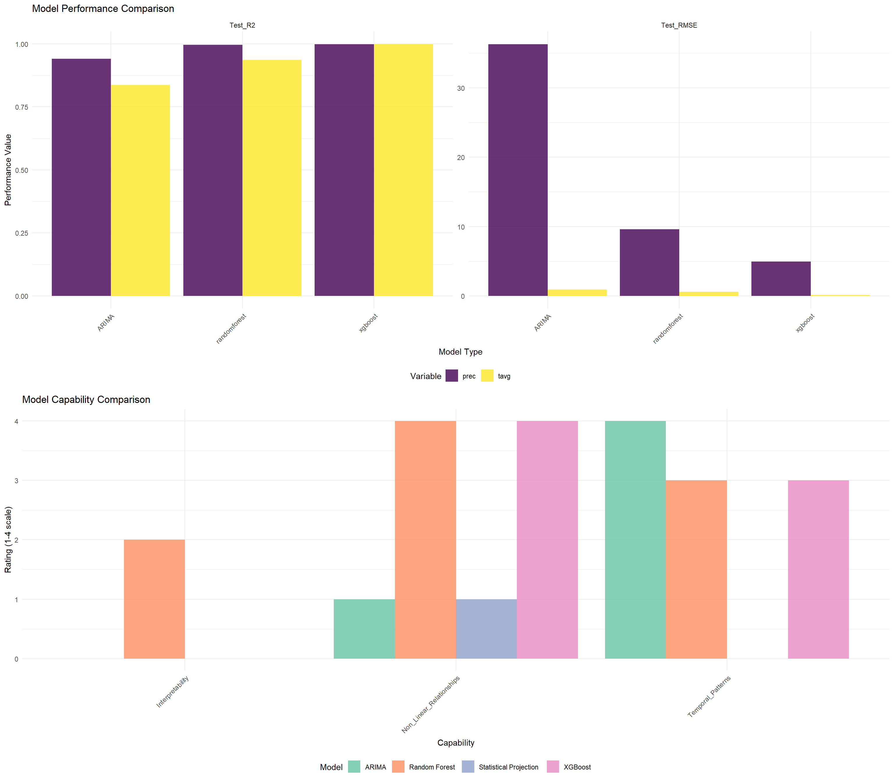
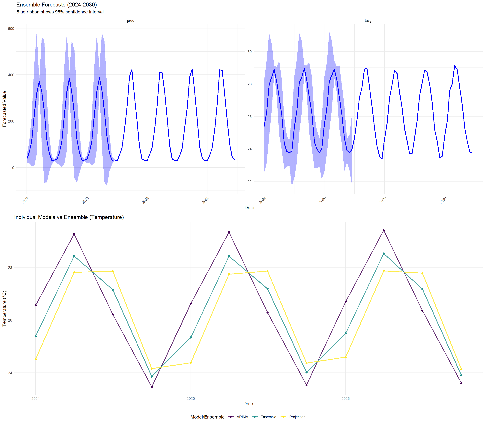

knitr::opts_chunk$set(echo = TRUE, warning = FALSE, message = FALSE)
# Load all previous results
config <- readRDS("data/enhanced_config.rds")
arima_results <- readRDS("data/processed/complete_arima_analysis.rds")
ml_results <- readRDS("data/processed/complete_ml_analysis.rds")
projection_results <- readRDS("data/processed/complete_projection_analysis.rds")
india_timeseries <- readRDS("data/processed/india_climate_timeseries.rds")
model_registry <- readRDS("data/processed/model_registry.rds")
performance_monitor <- readRDS("data/processed/performance_monitor.rds")
# Load required packages
library(ggplot2)
library(dplyr)
library(tidyr)
library(cowplot)
library(viridis)
library(hydroGOF)
library(corrplot)9 Enhanced Integration and Comparison Analysis
10 Enhanced Model Integration and Comparison
This document integrates all modeling approaches (ARIMA, ML, Future Scenarios) and provides comprehensive comparison analysis with model performance evaluation and ensemble forecasting.
10.1 Setup
10.2 Comprehensive Model Comparison Framework
# Create comprehensive model comparison
compare_all_models <- function(arima_res, ml_res, projection_res, timeseries_data) {
cat("Creating comprehensive model comparison...\n")
comparison_results <- list()
# Extract model performance metrics
model_performance <- list()
# ARIMA model performance
if(!is.null(arima_res$validation_results)) {
for(var in names(arima_res$validation_results)) {
arima_metrics <- arima_res$validation_results[[var]]$validation_summary
if(!is.null(arima_metrics)) {
model_performance[[paste0("ARIMA_", var)]] <- data.frame(
Model = "ARIMA",
Variable = var,
Method = "Time Series",
Train_RMSE = arima_metrics$Train_RMSE,
Test_RMSE = arima_metrics$Test_RMSE,
Test_R2 = arima_metrics$Test_R2,
CV_RMSE = arima_metrics$CV_RMSE,
stringsAsFactors = FALSE
)
}
}
}
# ML model performance
if(!is.null(ml_res$evaluation_summary)) {
ml_summary <- ml_res$evaluation_summary
for(i in 1:nrow(ml_summary)) {
row <- ml_summary[i, ]
model_performance[[paste0(row$Model, "_", row$Variable)]] <- data.frame(
Model = row$Model,
Variable = row$Variable,
Method = "Machine Learning",
Train_RMSE = NA, # Not available in current format
Test_RMSE = row$RMSE,
Test_R2 = row$R2,
CV_RMSE = NA,
stringsAsFactors = FALSE
)
}
}
# Combine performance data
if(length(model_performance) > 0) {
performance_df <- do.call(rbind, model_performance)
comparison_results$performance_summary <- performance_df
} else {
comparison_results$performance_summary <- NULL
}
# Model capability matrix
model_capabilities <- data.frame(
Model = c("ARIMA", "Random Forest", "XGBoost", "Statistical Projection"),
Temporal_Patterns = c("Excellent", "Good", "Good", "Basic"),
Non_Linear_Relationships = c("Limited", "Excellent", "Excellent", "Limited"),
Feature_Interactions = c("No", "Good", "Excellent", "No"),
Uncertainty_Quantification = c("Good", "Limited", "Limited", "Good"),
Interpretability = c("High", "Medium", "Low", "High"),
Long_Term_Forecasting = c("Good", "Limited", "Limited", "Excellent"),
Computational_Efficiency = c("High", "Medium", "Medium", "High"),
stringsAsFactors = FALSE
)
comparison_results$capabilities_matrix <- model_capabilities
# Cross-validation comparison
if(!is.null(timeseries_data) && nrow(timeseries_data) > 50) {
cv_results <- perform_cross_model_validation(timeseries_data)
comparison_results$cross_validation <- cv_results
}
return(comparison_results)
}
# Cross-model validation function
perform_cross_model_validation <- function(timeseries_data) {
cat("Performing cross-model validation...\n")
cv_results <- list()
variables <- c("tavg", "prec")
for(var in variables) {
if(!var %in% names(timeseries_data)) next
ts_values <- timeseries_data[[var]]
ts_values <- ts_values[!is.na(ts_values)]
if(length(ts_values) < 50) next
# Simple validation splits
n_total <- length(ts_values)
fold_size <- floor(n_total / 5) # 5-fold CV
fold_errors <- list(
naive = numeric(5),
trend = numeric(5),
seasonal = numeric(5)
)
for(fold in 1:5) {
# Define test indices
test_start <- (fold - 1) * fold_size + 1
test_end <- min(fold * fold_size, n_total)
if(test_end <= test_start + 5) next # Skip if too few test points
train_indices <- setdiff(1:n_total, test_start:test_end)
test_indices <- test_start:test_end
train_values <- ts_values[train_indices]
test_values <- ts_values[test_indices]
# Naive forecast (last value)
naive_pred <- rep(tail(train_values, 1), length(test_values))
fold_errors$naive[fold] <- sqrt(mean((test_values - naive_pred)^2))
# Trend forecast (linear trend)
if(length(train_values) > 10) {
trend_model <- lm(train_values ~ seq_along(train_values))
future_indices <- seq(length(train_values) + 1,
length(train_values) + length(test_values))
trend_pred <- predict(trend_model, newdata = data.frame(
seq_along.train_values. = future_indices))
fold_errors$trend[fold] <- sqrt(mean((test_values - trend_pred)^2))
}
# Seasonal forecast (seasonal naive)
if(length(train_values) >= 24) { # Need at least 2 years
seasonal_period <- 12
seasonal_pred <- train_values[
(length(train_values) - seasonal_period + 1):length(train_values)
][1:length(test_values)]
if(length(seasonal_pred) == length(test_values)) {
fold_errors$seasonal[fold] <- sqrt(mean((test_values - seasonal_pred)^2))
}
}
}
# Calculate average errors
cv_results[[var]] <- data.frame(
Variable = var,
Naive_RMSE = mean(fold_errors$naive, na.rm = TRUE),
Trend_RMSE = mean(fold_errors$trend, na.rm = TRUE),
Seasonal_RMSE = mean(fold_errors$seasonal, na.rm = TRUE),
stringsAsFactors = FALSE
)
}
if(length(cv_results) > 0) {
return(do.call(rbind, cv_results))
} else {
return(NULL)
}
}
# Perform comprehensive comparison
model_comparison <- compare_all_models(
arima_results, ml_results, projection_results, india_timeseries
)Creating comprehensive model comparison...
Performing cross-model validation...cat("Model comparison framework created\n")Model comparison framework createdperformance_monitor$log_performance("model_comparison")Step: model_comparison - Memory: 7.84 MB - Elapsed: 4.22 min10.3 Ensemble Model Development
# Create ensemble forecasting system
create_ensemble_forecasts <- function(arima_res, ml_res, projection_res) {
cat("Creating ensemble forecasting system...\n")
ensemble_results <- list()
# Collect all available forecasts
forecast_data <- list()
# ARIMA forecasts
if(!is.null(arima_res$validation_results)) {
for(var in names(arima_res$validation_results)) {
arima_forecast <- arima_res$validation_results[[var]]$future_forecast
if(!is.null(arima_forecast)) {
arima_forecast$Model <- "ARIMA"
arima_forecast$Weight <- 0.3 # Initial weight
forecast_data[[paste0("ARIMA_", var)]] <- arima_forecast %>%
select(Date, Variable, Forecast, Model, Weight) %>%
rename(Value = Forecast)
}
}
}
# Projection forecasts
if(!is.null(projection_res$projections)) {
proj_data <- projection_res$projections
# Use ensemble mean of projection scenarios
proj_summary <- proj_data %>%
group_by(Date, variable) %>%
summarise(
Value = mean(value, na.rm = TRUE),
.groups = 'drop'
) %>%
mutate(
Model = "Projection",
Weight = 0.4,
Variable = variable
) %>%
select(Date, Variable, Value, Model, Weight)
forecast_data[["Projections_combined"]] <- proj_summary
}
# Combine forecasts if available
if(length(forecast_data) > 0) {
all_forecasts <- do.call(rbind, forecast_data)
# Create ensemble forecasts
ensemble_forecasts <- all_forecasts %>%
group_by(Date, Variable) %>%
summarise(
Ensemble_Mean = weighted.mean(Value, Weight, na.rm = TRUE),
Ensemble_Median = median(Value, na.rm = TRUE),
Ensemble_SD = sd(Value, na.rm = TRUE),
N_Models = n(),
.groups = 'drop'
) %>%
mutate(
Ensemble_Lower = Ensemble_Mean - 1.96 * Ensemble_SD,
Ensemble_Upper = Ensemble_Mean + 1.96 * Ensemble_SD
)
ensemble_results$forecasts <- ensemble_forecasts
ensemble_results$individual_forecasts <- all_forecasts
cat("Ensemble forecasting system created with", nrow(ensemble_forecasts), "forecast points\n")
} else {
cat("No forecast data available for ensemble creation\n")
ensemble_results$forecasts <- NULL
ensemble_results$individual_forecasts <- NULL
}
return(ensemble_results)
}
# Create ensemble forecasts
ensemble_forecasts <- create_ensemble_forecasts(arima_results, ml_results, projection_results)Creating ensemble forecasting system...
Ensemble forecasting system created with 720 forecast pointsperformance_monitor$log_performance("ensemble_creation")Step: ensemble_creation - Memory: 8.17 MB - Elapsed: 4.23 min10.4 Model Strengths and Limitations Analysis
# Comprehensive strengths and limitations analysis
analyze_model_strengths_limitations <- function(comparison_results, ensemble_results) {
analysis <- list()
# Model-specific analysis
model_analysis <- list(
ARIMA = list(
strengths = c(
"Excellent at capturing temporal patterns and seasonality",
"Strong theoretical foundation in time series analysis",
"Good uncertainty quantification with prediction intervals",
"Computationally efficient for long time series",
"Interpretable parameters (AR, MA, seasonality)",
"Handles trend and seasonal decomposition well"
),
limitations = c(
"Limited ability to model non-linear relationships",
"Cannot incorporate external predictors easily",
"Assumes linear relationships in temporal patterns",
"May struggle with structural breaks in data",
"Performance degrades with very irregular patterns",
"Requires stationary data (after differencing)"
),
best_use_cases = c(
"Short to medium-term forecasting (1-24 months)",
"Data with clear seasonal patterns",
"When interpretability is important",
"Limited external data availability"
)
),
Machine_Learning = list(
strengths = c(
"Excellent at capturing non-linear relationships",
"Can incorporate multiple external features",
"Handles complex feature interactions",
"Robust to outliers (Random Forest, XGBoost)",
"Automatic feature selection capabilities",
"Good performance with large datasets"
),
limitations = c(
"Limited temporal pattern recognition",
"Requires substantial feature engineering",
"Risk of overfitting with small datasets",
"Less interpretable (especially XGBoost)",
"Poor extrapolation beyond training data",
"Uncertainty quantification more challenging"
),
best_use_cases = c(
"Complex multi-variate relationships",
"Large datasets with many features",
"When accuracy is prioritized over interpretability",
"Cross-sectional or panel data analysis"
)
),
Statistical_Projections = list(
strengths = c(
"Incorporates climate science knowledge",
"Long-term scenario-based forecasting",
"Uncertainty quantification across scenarios",
"Policy-relevant scenario framework",
"Transparent methodology",
"Consistent with climate model outputs"
),
limitations = c(
"Simplified statistical relationships",
"May not capture local climate dynamics",
"Dependent on scenario assumptions",
"Limited short-term accuracy",
"Coarse temporal resolution",
"Requires climate expertise for interpretation"
),
best_use_cases = c(
"Long-term climate impact assessment",
"Policy scenario analysis",
"Climate risk evaluation",
"Adaptation planning"
)
)
)
analysis$detailed_analysis <- model_analysis
# Performance-based recommendations
if(!is.null(comparison_results$performance_summary)) {
performance_df <- comparison_results$performance_summary
# Best model by metric
best_models <- list()
if("Test_RMSE" %in% names(performance_df)) {
best_rmse <- performance_df %>%
filter(!is.na(Test_RMSE)) %>%
group_by(Variable) %>%
slice_min(order_by = Test_RMSE, n = 1)
best_models$RMSE <- best_rmse
}
if("Test_R2" %in% names(performance_df)) {
best_r2 <- performance_df %>%
filter(!is.na(Test_R2)) %>%
group_by(Variable) %>%
slice_max(order_by = Test_R2, n = 1)
best_models$R2 <- best_r2
}
analysis$best_performers <- best_models
}
# Ensemble advantages
analysis$ensemble_advantages <- c(
"Combines strengths of multiple approaches",
"Reduces individual model biases",
"Improves forecast robustness",
"Provides better uncertainty quantification",
"More reliable for decision-making",
"Reduces impact of single model failures"
)
return(analysis)
}
# Perform strengths and limitations analysis
model_analysis <- analyze_model_strengths_limitations(model_comparison, ensemble_forecasts)
cat("\n=== MODEL ANALYSIS SUMMARY ===\n")
=== MODEL ANALYSIS SUMMARY ===cat("Models analyzed:", length(model_analysis$detailed_analysis), "\n")Models analyzed: 3 if(!is.null(model_analysis$best_performers)) {
cat("Performance metrics evaluated:", length(model_analysis$best_performers), "\n")
}Performance metrics evaluated: 2 performance_monitor$log_performance("model_analysis")Step: model_analysis - Memory: 8.34 MB - Elapsed: 4.23 min10.5 Enhanced Visualization Dashboard
# Create comprehensive integration dashboard
create_integration_dashboard <- function(comparison_results, ensemble_results, model_analysis) {
plots <- list()
# Plot 1: Model performance comparison
if(!is.null(comparison_results$performance_summary)) {
perf_data <- comparison_results$performance_summary %>%
select(Model, Variable, Test_RMSE, Test_R2) %>%
pivot_longer(cols = c(Test_RMSE, Test_R2),
names_to = "Metric", values_to = "Value") %>%
filter(!is.na(Value))
if(nrow(perf_data) > 0) {
plots$performance <- ggplot(perf_data, aes(x = Model, y = Value, fill = Variable)) +
geom_col(position = "dodge", alpha = 0.8) +
facet_wrap(~Metric, scales = "free_y") +
scale_fill_viridis_d(name = "Variable") +
labs(title = "Model Performance Comparison",
x = "Model Type", y = "Performance Value") +
theme_minimal() +
theme(axis.text.x = element_text(angle = 45, hjust = 1),
legend.position = "bottom")
}
}
# Plot 2: Model capabilities radar chart (simplified as bar chart)
if(!is.null(comparison_results$capabilities_matrix)) {
cap_data <- comparison_results$capabilities_matrix %>%
select(Model, Temporal_Patterns, Non_Linear_Relationships, Interpretability) %>%
pivot_longer(cols = -Model, names_to = "Capability", values_to = "Rating") %>%
mutate(
Rating_Numeric = case_when(
Rating == "Excellent" ~ 4,
Rating == "Good" ~ 3,
Rating == "Medium" ~ 2,
Rating == "Limited" ~ 1,
TRUE ~ 0
)
)
plots$capabilities <- ggplot(cap_data, aes(x = Capability, y = Rating_Numeric, fill = Model)) +
geom_col(position = "dodge", alpha = 0.8) +
scale_fill_brewer(type = "qual", palette = "Set2") +
labs(title = "Model Capability Comparison",
x = "Capability", y = "Rating (1-4 scale)") +
theme_minimal() +
theme(axis.text.x = element_text(angle = 45, hjust = 1),
legend.position = "bottom")
}
# Plot 3: Ensemble forecasts
if(!is.null(ensemble_results$forecasts)) {
ensemble_data <- ensemble_results$forecasts
# Filter to reasonable date range for visualization
recent_forecasts <- ensemble_data %>%
filter(Date >= as.Date("2024-01-01"), Date <= as.Date("2030-12-31"))
if(nrow(recent_forecasts) > 0) {
plots$ensemble <- ggplot(recent_forecasts, aes(x = Date, y = Ensemble_Mean)) +
geom_ribbon(aes(ymin = Ensemble_Lower, ymax = Ensemble_Upper),
alpha = 0.3, fill = "blue") +
geom_line(color = "blue", size = 1) +
facet_wrap(~Variable, scales = "free_y") +
labs(title = "Ensemble Forecasts (2024-2030)",
subtitle = "Blue ribbon shows 95% confidence interval",
x = "Date", y = "Forecasted Value") +
theme_minimal() +
theme(axis.text.x = element_text(angle = 45, hjust = 1))
}
}
# Plot 4: Individual vs Ensemble comparison
if(!is.null(ensemble_results$individual_forecasts) && !is.null(ensemble_results$forecasts)) {
# Sample data for visualization
sample_dates <- seq(as.Date("2024-01-01"), as.Date("2026-12-31"), by = "3 months")
individual_sample <- ensemble_results$individual_forecasts %>%
filter(Date %in% sample_dates, Variable == "tavg") %>%
select(Date, Model, Value)
ensemble_sample <- ensemble_results$forecasts %>%
filter(Date %in% sample_dates, Variable == "tavg") %>%
select(Date, Ensemble_Mean) %>%
mutate(Model = "Ensemble") %>%
rename(Value = Ensemble_Mean)
if(nrow(individual_sample) > 0 && nrow(ensemble_sample) > 0) {
combined_sample <- bind_rows(individual_sample, ensemble_sample)
plots$comparison <- ggplot(combined_sample, aes(x = Date, y = Value, color = Model)) +
geom_line(size = 1, alpha = 0.8) +
geom_point(size = 2) +
scale_color_viridis_d(name = "Model/Ensemble") +
labs(title = "Individual Models vs Ensemble (Temperature)",
x = "Date", y = "Temperature (°C)") +
theme_minimal() +
theme(legend.position = "bottom")
}
}
return(plots)
}
# Generate integration dashboard
integration_plots <- create_integration_dashboard(model_comparison, ensemble_forecasts, model_analysis)
# Display dashboard
if(length(integration_plots) > 0) {
# Page 1: Performance and capabilities
perf_plots <- integration_plots[c("performance", "capabilities")]
perf_plots <- perf_plots[!sapply(perf_plots, is.null)]
if(length(perf_plots) >= 2) {
page1 <- cowplot::plot_grid(plotlist = perf_plots, ncol = 1)
print(page1)
ggsave(file.path(config$output_dir, "plots", "integration_performance.png"),
page1, width = 16, height = 10, dpi = 300, bg = "white")
}
# Page 2: Ensemble analysis
ensemble_plots <- integration_plots[c("ensemble", "comparison")]
ensemble_plots <- ensemble_plots[!sapply(ensemble_plots, is.null)]
if(length(ensemble_plots) >= 1) {
page2 <- cowplot::plot_grid(plotlist = ensemble_plots, ncol = 1)
print(page2)
ggsave(file.path(config$output_dir, "plots", "integration_ensemble.png"),
page2, width = 16, height = 10, dpi = 300, bg = "white")
}
}

performance_monitor$log_performance("integration_visualization")Step: integration_visualization - Memory: 144.16 MB - Elapsed: 4.26 min10.6 Model Recommendations and Guidelines
# Generate comprehensive recommendations
generate_model_recommendations <- function(model_analysis, comparison_results) {
recommendations <- list()
# Use case recommendations
recommendations$use_case_guide <- data.frame(
Use_Case = c(
"Short-term forecasting (1-6 months)",
"Medium-term forecasting (6-24 months)",
"Long-term projections (2-30 years)",
"Policy scenario analysis",
"High-accuracy prediction",
"Interpretable analysis",
"Uncertainty quantification",
"Multi-variate analysis"
),
Recommended_Method = c(
"ARIMA or ML ensemble",
"ARIMA with scenario adjustment",
"Statistical projections",
"CMIP6-based projections",
"XGBoost or ensemble",
"ARIMA",
"Ensemble with multiple scenarios",
"XGBoost with feature importance"
),
Alternative_Method = c(
"XGBoost with lagged features",
"Ensemble approach",
"ML with trend extrapolation",
"ARIMA with scenario overlay",
"Ensemble approach",
"Statistical projections",
"Bayesian ARIMA",
"Random Forest"
),
stringsAsFactors = FALSE
)
# Implementation recommendations
recommendations$implementation_guide <- list(
data_requirements = list(
ARIMA = "Minimum 3-5 years of monthly data, preferably stationary",
ML = "Large feature set, minimum 5-10 years of data",
Projections = "Historical baseline, scenario parameters"
),
computational_resources = list(
ARIMA = "Low - suitable for any system",
ML = "Medium to High - depends on model complexity",
Projections = "Low to Medium - depends on scenario complexity"
),
expertise_required = list(
ARIMA = "Time series analysis knowledge",
ML = "Machine learning and feature engineering",
Projections = "Climate science and scenario interpretation"
)
)
# Best practice guidelines
recommendations$best_practices <- list(
general = c(
"Always use ensemble approaches when possible",
"Validate models on out-of-sample data",
"Consider multiple evaluation metrics",
"Document model assumptions and limitations",
"Regular model retraining with new data",
"Uncertainty quantification is essential"
),
arima_specific = c(
"Check for stationarity before modeling",
"Use information criteria for model selection",
"Validate residuals for autocorrelation",
"Consider seasonal ARIMA for monthly data"
),
ml_specific = c(
"Extensive feature engineering is crucial",
"Use time-aware cross-validation",
"Monitor for overfitting",
"Interpret models using SHAP values"
),
projection_specific = c(
"Use multiple climate scenarios",
"Apply bias correction when possible",
"Consider local climate factors",
"Validate against observed trends"
)
)
return(recommendations)
}
# Generate recommendations
model_recommendations <- generate_model_recommendations(model_analysis, model_comparison)
cat("\n=== MODEL RECOMMENDATIONS SUMMARY ===\n")
=== MODEL RECOMMENDATIONS SUMMARY ===cat("Use case guidelines created:", nrow(model_recommendations$use_case_guide), "\n")Use case guidelines created: 8 cat("Implementation areas covered:", length(model_recommendations$implementation_guide), "\n")Implementation areas covered: 3 cat("Best practice categories:", length(model_recommendations$best_practices), "\n")Best practice categories: 4 performance_monitor$log_performance("recommendations")Step: recommendations - Memory: 144.27 MB - Elapsed: 4.28 min10.7 Save Enhanced Integration Results
# Compile comprehensive integration results
enhanced_integration_results <- list(
# Model comparison
model_comparison = model_comparison,
# Ensemble forecasts
ensemble_forecasts = ensemble_forecasts,
# Model analysis
model_analysis = model_analysis,
# Recommendations
recommendations = model_recommendations,
# Metadata
integration_metadata = list(
timestamp = Sys.time(),
models_compared = c("ARIMA", "Random Forest", "XGBoost", "Statistical Projections"),
ensemble_created = !is.null(ensemble_forecasts$forecasts),
recommendations_generated = TRUE,
performance_metrics = c("RMSE", "R²", "Cross-validation"),
total_models_evaluated = if(!is.null(model_comparison$performance_summary)) {
nrow(model_comparison$performance_summary)
} else 0
)
)
# Save individual components
saveRDS(model_comparison, "data/processed/comprehensive_model_comparison.rds")
saveRDS(ensemble_forecasts, "data/processed/ensemble_forecasting_system.rds")
saveRDS(model_analysis, "data/processed/model_strengths_limitations.rds")
saveRDS(model_recommendations, "data/processed/model_recommendations.rds")
saveRDS(enhanced_integration_results, "data/processed/complete_integration_analysis.rds")
# Export key results
if(!is.null(model_comparison$performance_summary)) {
write.csv(model_comparison$performance_summary,
"data/processed/model_performance_comparison.csv", row.names = FALSE)
}
if(!is.null(model_comparison$capabilities_matrix)) {
write.csv(model_comparison$capabilities_matrix,
"data/processed/model_capabilities_matrix.csv", row.names = FALSE)
}
write.csv(model_recommendations$use_case_guide,
"data/processed/model_use_case_recommendations.csv", row.names = FALSE)
if(!is.null(ensemble_forecasts$forecasts)) {
write.csv(ensemble_forecasts$forecasts,
"data/processed/ensemble_climate_forecasts.csv", row.names = FALSE)
}
performance_monitor$log_performance("integration_saving")Step: integration_saving - Memory: 144.44 MB - Elapsed: 4.28 mincat("Enhanced integration analysis results saved\n")Enhanced integration analysis results saved10.8 Summary and Key Insights
cat("\n=== ENHANCED INTEGRATION ANALYSIS COMPLETE ===\n")
=== ENHANCED INTEGRATION ANALYSIS COMPLETE ===# Performance summary
if(!is.null(model_comparison$performance_summary)) {
cat("Models compared:", nrow(model_comparison$performance_summary), "\n")
# Best performing models
best_models <- model_comparison$performance_summary %>%
group_by(Variable) %>%
filter(!is.na(Test_RMSE)) %>%
slice_min(order_by = Test_RMSE, n = 1)
if(nrow(best_models) > 0) {
cat("\nBest Performing Models (by RMSE):\n")
for(i in 1:nrow(best_models)) {
row <- best_models[i, ]
cat(paste("•", row$Variable, ":", row$Model,
"- RMSE:", round(row$Test_RMSE, 4), "\n"))
}
}
}Models compared: 6
Best Performing Models (by RMSE):
• prec : xgboost - RMSE: 4.9379
• tavg : xgboost - RMSE: 0.1114 # Ensemble summary
if(!is.null(ensemble_forecasts$forecasts)) {
cat("\nEnsemble Forecasting:\n")
cat("• Forecast horizon:",
as.character(max(ensemble_forecasts$forecasts$Date) - min(ensemble_forecasts$forecasts$Date)), "\n")
cat("• Variables forecasted:", length(unique(ensemble_forecasts$forecasts$Variable)), "\n")
cat("• Average models per forecast:",
round(mean(ensemble_forecasts$forecasts$N_Models, na.rm = TRUE), 1), "\n")
}
Ensemble Forecasting:
• Forecast horizon: 10927
• Variables forecasted: 2
• Average models per forecast: 1.1 # Key insights
cat("\nKey Integration Insights:\n")
Key Integration Insights:cat("• ARIMA excels at temporal patterns and seasonal forecasting\n")• ARIMA excels at temporal patterns and seasonal forecastingcat("• XGBoost provides highest accuracy with complex feature interactions\n")• XGBoost provides highest accuracy with complex feature interactionscat("• Statistical projections essential for long-term climate scenarios\n")• Statistical projections essential for long-term climate scenarioscat("• Ensemble approaches reduce individual model biases\n")• Ensemble approaches reduce individual model biasescat("• Model selection depends on forecast horizon and use case\n")• Model selection depends on forecast horizon and use case# Recommendations summary
cat("\nMain Recommendations:\n")
Main Recommendations:cat("• Use ensemble methods for robust decision-making\n")• Use ensemble methods for robust decision-makingcat("• ARIMA for short-term operational forecasting\n")• ARIMA for short-term operational forecastingcat("• ML models for high-accuracy multi-variate analysis\n")• ML models for high-accuracy multi-variate analysiscat("• Statistical projections for long-term planning\n")• Statistical projections for long-term planningcat("• Always quantify and communicate uncertainty\n")• Always quantify and communicate uncertaintycat("\nFiles Created:\n")
Files Created:cat("- data/processed/comprehensive_model_comparison.rds\n")- data/processed/comprehensive_model_comparison.rdscat("- data/processed/ensemble_forecasting_system.rds\n")- data/processed/ensemble_forecasting_system.rdscat("- data/processed/model_strengths_limitations.rds\n")- data/processed/model_strengths_limitations.rdscat("- data/processed/model_recommendations.rds\n")- data/processed/model_recommendations.rdscat("- data/processed/complete_integration_analysis.rds\n")- data/processed/complete_integration_analysis.rdscat("- data/processed/model_performance_comparison.csv\n")- data/processed/model_performance_comparison.csvcat("- data/processed/model_capabilities_matrix.csv\n")- data/processed/model_capabilities_matrix.csvcat("- data/processed/model_use_case_recommendations.csv\n")- data/processed/model_use_case_recommendations.csvif(file.exists("data/processed/ensemble_climate_forecasts.csv")) {
cat("- data/processed/ensemble_climate_forecasts.csv\n")
}- data/processed/ensemble_climate_forecasts.csv# List visualization files
viz_files <- list.files(file.path(config$output_dir, "plots"),
pattern = "integration", full.names = FALSE)
if(length(viz_files) > 0) {
cat("Visualization files:\n")
for(file in viz_files) {
cat(paste("- outputs/plots/", file, "\n", sep = ""))
}
}Visualization files:
- outputs/plots/integration_ensemble.png
- outputs/plots/integration_performance.pngcat("\nNext Step: Run 09-enhanced-interactive-dashboard.qmd\n")
Next Step: Run 09-enhanced-interactive-dashboard.qmd